One can express the nOe intensities obtained from a NOESY experiment, as a
series of symmetric matrices
 ,
where
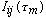
holds the intensity of the cross peak between atoms i and j, for a NOESY mixing
time of
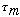.
The relaxation parameters for each pair of spins can be presented as the
relaxation matrix
,
where
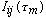
holds the intensity of the cross peak between atoms i and j, for a NOESY mixing
time of
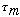.
The relaxation parameters for each pair of spins can be presented as the
relaxation matrix
 .
.
 is
bound to the nOe intensity matrix
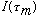
by the relation :
is
bound to the nOe intensity matrix
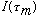
by the relation :
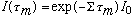
(1)
where Io is a diagonal matrix with elements equal to the equilibrium
magnetizations of each respective spin.
If the complete experimental determination of the
matrix can be performed at a given
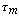,
then the determination of
 is straightforward. However this is seldom the case, due to overlaps in the 2D
NOESY spectra.
is straightforward. However this is seldom the case, due to overlaps in the 2D
NOESY spectra.
The problem is then one of incompleteness of
 and several procedures have been proposed to interpret quantitative NOESY
information in terms of the relaxation matrix
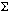.
We will show here, that this incompleteness can be avoided if one takes a
different approach to the problem.
and several procedures have been proposed to interpret quantitative NOESY
information in terms of the relaxation matrix
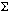.
We will show here, that this incompleteness can be avoided if one takes a
different approach to the problem.
The relaxation matrix is symmetric, provided we use the construction proposed
by Olejniczak (Olejniczak, E. T. (1989) J. Magn. Res. 81,
392-394). It can be diagonalized :
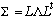
(2)
where
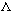
is a diagonal matrix, and I is thus computed by :
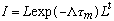
(3)
From Eq. (2) we can rewrite each element of matrix
in the following way :
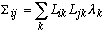
(4)
so that each element of matrix I becomes :
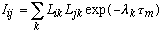
(5)
where the
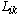
is the (i,k) element of the matrix L, and
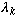
is the
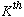
element of the diagonal matrix
.
We can rewrite Eqs. (4) and (5) as follows :
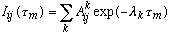
(6)
and :
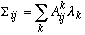
(7)
where :
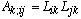
(8)
The form of Eq. (6) proves that NOESY build-up curves are sums of
exponentials. Eqs. (6) and (7) show that we can deduce the value of the
relaxation matrix elements from the analytical form of the build-up curve.
The process we propose for computing the relaxation matrix elements from the
NOESY experimental intensities is then, given an experimental nOe build-up
curve
measured between atoms i and j, to extract the parameters
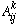
and
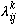
of the multi-exponential decay.
From the parameters
and
it is then easy to obtain the values of the relaxation parameter
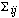.
Subsequently, it is possible to extract distance information, by assuming a
dynamic model for the molecule (for instance rigid spherical tumbling).
In Gifa, the LP-SVD method is used for multiexponential analysis of the
curves, because it permits the separation of the signal parameters from
additional parameters arising from the noise.
When the noise level is high, however, instability in the polynomial rooting
may generate complex roots outside the unit-circle. In this case, these roots
are found as complex conjugated doublets called "Froissard doublets". Such
doublets lead to very inaccurate reconstruction of the respective relaxation
matrix elements. To circumvent this problem, we propose the rotation of such
doublets around the median point, before the amplitude estimate, in order to
bring the roots back to the real axis.
A Froissard doublet is characterized by two related roots, located within the
unit-circle, with opposite frequencies, opposite imaginary phases and the same
amplitudes and damping factors:
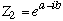
(A1)
time dependence generated by such a pattern is:
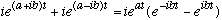
(A2)
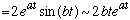
if
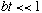
the rotation leads to:
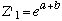
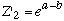
(A3)
which gives:
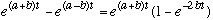
(A4)
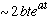
if
and
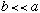
The developments of the two expressions are very similar and equivalent for
small values of bt. The operation permitting the replacement of Eq. (A2) by
(A4) is equivalent to pivoting the root doublet by
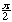
about the center of the doublet, bringing the roots back onto the real axis.
This operation does not modify the first order of the build-up curve
reconstruction and can be safely used when the imaginary part of the complex
root is small compared to the real part. This condition can be translated into
geometric terms, by enforcing that the complex roots must lie within a cone of
angular extent
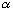.
In some cases however, particularly when the signal to noise ratio is very
low, the LP-SVD analysis produces complex root doublets corresponding to higher
frequencies for which the equations A2) and (A4) are no longer equivalent. In
this case the fast frequencies detected in the signal are probably associated
to the noise. We thus chose to ignore the related roots altogether for the
amplitude reconstruction step. This decision was supported by the fact that the
corresponding amplitudes, when computed, often appear to be at least one order
of magnitude smaller than the other amplitudes.
From the multi-exponential analysis performed on the build-up curve as
described, the relaxation parameter
is computed as shown in Eq. (7). It is obvious that the accuracy of the
determination of the relaxation parameter is critically related to the accuracy
of the multi-exponential analysis. In order to check the quality of this
analysis, for each build-up curve processed, an "R factor" can be
computed,.much in the way X-ray crystallographers do.
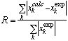
(10)
Here
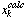
is the value of the calculated build-up curve reconstructed from the
multi-exponential parameters, and
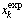
is the "experimental" data, for k running on the different values of
.
We found the R factor to be more discriminant when computed only for small
values of
 .
.
From the rates, the distances can be calculated, by assuming a dynamic model
for the molecule. In Gifa, the rigid spherical tumbling model is available and
permits to calculate the distances from the relaxation rates, in the following
way. Having chosen a calibration rate
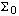,
corresponding to the known distance do, all other distances
dij are obtained from the rates
 :
:
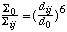
(11)